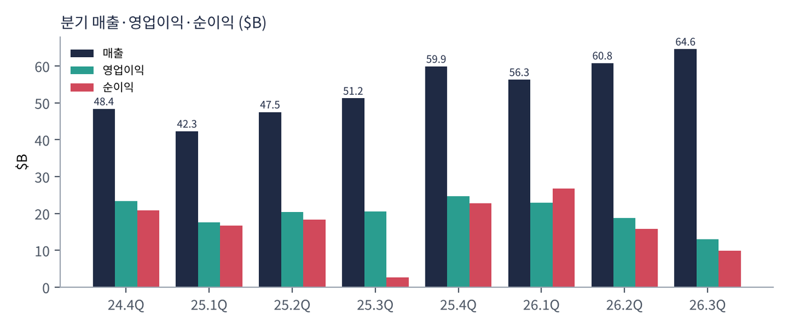
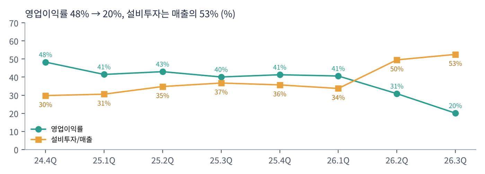
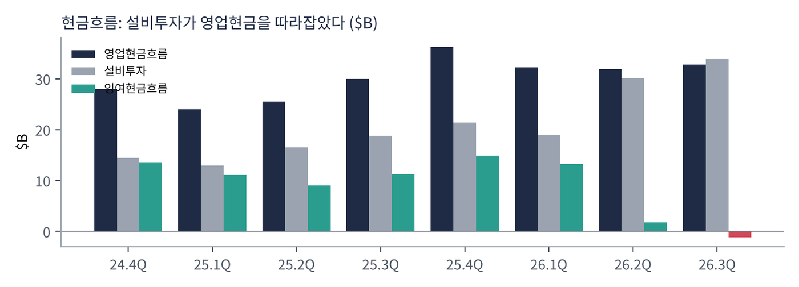
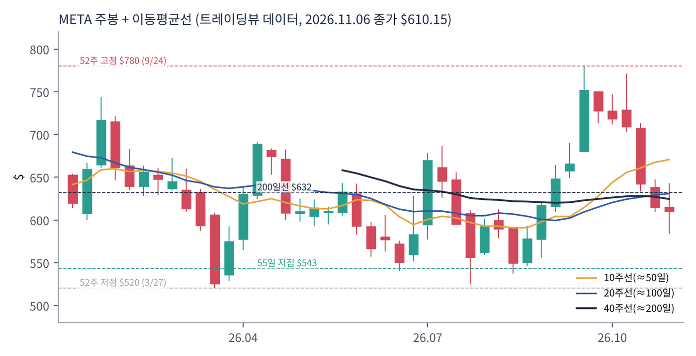
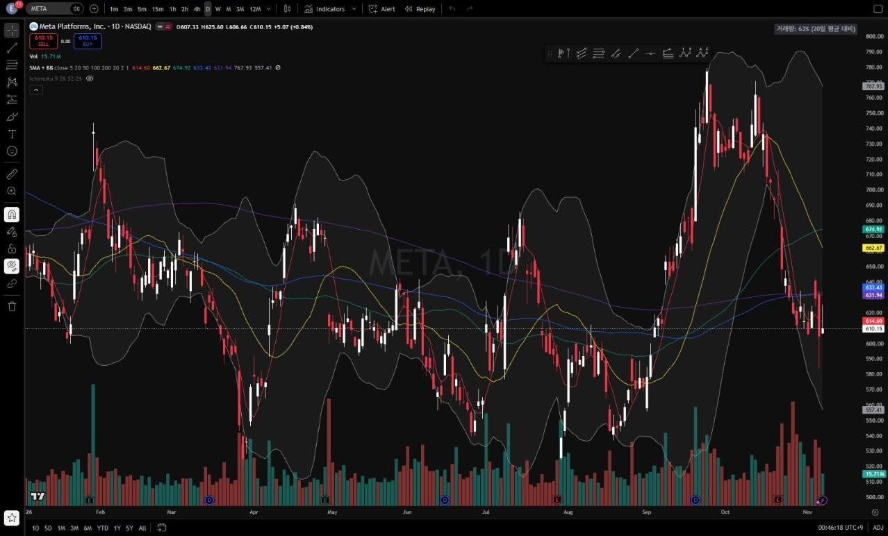
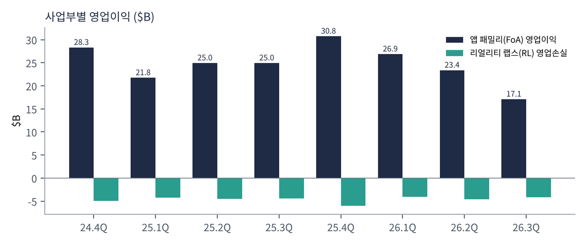

메타는 페이스북·인스타그램·왓츠앱·메신저·스레드를 운영하는 세계 최대 소셜 미디어 회사다. 매출의 98%가 광고에서 나온다. 매일 36억 명이 메타 앱 중 하나 이상을 쓴다. 2021년 사명을 바꾸고 메타버스(리얼리티 랩스)에 대규모로 투자했지만, 2025년부터는 투자의 중심을 AI, 특히 '초지능 연구소(MSL)'로 옮겼다.
| 항목 | 내용 |
|---|---|
| 종목 | Meta Platforms, Inc. (META) · 인터넷 서비스 · 2004년 설립 · 본사 캘리포니아주 멘로파크 |
| 경영진 | 마크 저커버그 창업자 겸 CEO(차등 의결권으로 경영권 보유) / 수전 리 CFO |
| 시가총액 | 약 $1.56T · PER 20.7배 (트레이딩뷰, 11/6 종가 기준) |
| 최근 분기(3Q26) | 매출 $64.6B(+26%), 영업이익 $13.0B, 순이익 $9.9B, EPS $3.83 |
| 재무 | 현금·유가증권 $82.5B, 장기 부채 $80.9B, 직원 66,775명(-15%) |
| 분기 | 매출 | 광고 | 영업이익 | 이익률 | 순이익 | EPS | 특이 사항 |
|---|---|---|---|---|---|---|---|
| 2024.4Q | $48.4B | $46.8B | $23.4B | 48% | $20.8B | $8.02 | |
| 2025.1Q | $42.3B | $41.4B | $17.6B | 41% | $16.6B | $6.43 | |
| 2025.2Q | $47.5B | $46.6B | $20.4B | 43% | $18.3B | $7.14 | |
| 2025.3Q | $51.2B | $50.1B | $20.5B | 40% | $2.7B | $1.05 | 일회성 세금 비용(세율 87%) |
| 2025.4Q | $59.9B | $58.1B | $24.7B | 41% | $22.8B | $8.88 | 매출 첫 $59B대 |
| 2026.1Q | $56.3B | $55.0B | $22.9B | 41% | $26.8B | $10.44 | 세금 혜택 반영 |
| 2026.2Q | $60.8B | $59.4B | $18.8B | 31% | $15.8B | $6.18 | 소송 비용 $2.4B |
| 2026.3Q | $64.6B | $63.1B | $13.0B | 20% | $9.9B | $3.83 | 소송 합의 $9.89B |

매출은 가속, 이익은 감속. 매출 성장률은 2025년 하반기 22~26%에서 2026년 1분기 33%, 2분기 28%, 3분기 26%로 높게 유지됐다. 그런데 영업이익은 2분기 -8%, 3분기 -37%로 줄었다. 3분기 비용은 1년 새 68% 늘었다. 일회성 소송 비용을 빼도 비용 증가율(약 36%)이 매출 증가율(26%)보다 높다. 연구개발비가 $15.1B에서 $20.1B로, 원가(데이터센터 운영)가 $9.2B에서 $13.4B로, 감가상각이 $5.0B에서 $7.2B로 늘었다.
순이익은 일회성 세금·소송 때문에 크게 흔들린다. 2025년 3분기 순이익 $2.7B는 미국 세법 변경에 따른 일회성 이연법인세 비용(세율 87%) 때문이다. 2026년 1분기 순이익이 영업이익보다 큰 것은 세금 혜택이 반영된 결과다. 본업 흐름은 영업이익과 소송 비용 제외 수치로 보는 것이 정확하다.

두 선이 교차했다. 영업이익률(48% → 20%)과 설비투자/매출 비율(30% → 53%)이 2026년 2분기에 처음으로 자리를 바꿨다. 매출 1달러 중 53센트가 데이터센터·서버에 들어가고 있다는 뜻이다.

현금 창출력이 투자에 다 쓰인다. 영업현금흐름은 분기 $32~36B로 안정적이지만, 설비투자가 $14B에서 $34B로 늘어 잉여현금흐름이 $13B에서 -$2B가 됐다. 2025년에는 자사주 매입에 $26B를 썼지만 2026년에는 매입이 없다. 대신 부채 $24.9B를 새로 냈다.
| 항목 | 전망 |
|---|---|
| 4Q26 매출 | $73~76B (전년 $59.9B 대비 +22~27%) |
| 2026년 총비용 | $175~179B (소송 비용 $9.9B 반영해 상향) |
| 2026년 설비투자 | $135~145B (2025년 약 $72B의 약 2배) |
| 리얼리티 랩스 손실 | 2026년 $18~19B, 2027년 약 $15B로 축소 |
| 2027년 | "공격적 투자 지속", 매출 가이던스는 없지만 "강한 매출 성장 유지" 전망 |
트레이딩뷰 META 일봉 300개(2025.8 ~ 2026.11.6)와 주봉으로 계산했다. 결론부터 말하면 1년 넘게 $520~780 사이 넓은 박스권이다. 실적 발표 때마다 ±10% 움직이고, 박스 상단에서 매도·하단에서 매수가 반복됐다.


위: 주봉 재구성 차트. 아래: 트레이딩뷰 일봉 캡처(작도 없이 이동평균선·볼린저밴드만 표시).
| 이동평균 | 값 | 종가 대비 | 해석 |
|---|---|---|---|
| 5일선 | $614.6 | -0.7% | 하락 멈추고 횡보 |
| 20일선 | $662.7 | -7.9% | 실적 갭 상단 |
| 50일선 | $674.9 | -9.6% | 9~10월 고점권 평균 |
| 100일선 | $633.4 | -3.7% | 200일선과 거의 겹침 |
| 200일선 | $631.9 | -3.4% | 10월 말 이탈 — 1차 회복 목표 |
배열은 50일 > 20일 > 100일 ≈ 200일 > 5일 > 주가다. 주봉 흐름: 2025년 8~9월 $740~790 → 10월 말 실적(대규모 투자 계획) 발표 후 $650 → 11월 $581 → 2026년 1월 말 실적 호조로 $744 → 2~3월 하락, 3/27 연저점 $520 → 4월 $688 반등 → 5~6월 $540~640 → 7월 말 실적 후 $524까지 급락 → 9월 Muse 출시 전후로 $616 → $780(9/24 52주 신고가) → 10/21 실적(소송 합의금·비용 상향) 후 -9%, 11월 첫 주 장중 $584 → $610 마감.
| 규칙 | 기준 | 현재 값 | 신호 |
|---|---|---|---|
| 장기 추세 필터 | 종가 vs 200일선 | $610.2 < $631.9 | 매도 |
| 중장기 교차 | 50일선 vs 200일선 | $674.9 > $631.9 | 매수 |
| 단기 교차 | 20일선 vs 50일선 | $662.7 < $674.9 | 매도 |
| 돈키언 채널 | 55일 고가 $779.8 / 저가 $543.2 | 중간값 $661.5 아래 | 매도 |
| 1개월 모멘텀 | 21거래일 수익률 | -15.4% (기준 $720.9) | 매도 |
| 3개월 모멘텀 | 63거래일 수익률 | +2.6% (기준 $594.9) | 매수 |
| 6개월 모멘텀 | 126거래일 수익률 | +0.1% (기준 $609.6) | 매수 |
| 12개월 모멘텀 | 252거래일 수익률 | -4.1% (기준 $636.0) | 매도 |
| 종합 (8개 평균) | -0.25 | 중립 약세 | |
해석: 박스권 종목의 전형적인 모습이다. 6개월 모멘텀은 +0.1%로 사실상 0이고, 3·12개월도 ±5% 안이다. 작은 가격 변화에도 신호가 쉽게 바뀌는 자리라, $632(200일선)를 회복하면 점수가 0으로, $636(12개월 기준)을 넘으면 +0.25로 바로 올라간다. 14일 ATR $23.8(3.9%).
| 가격 | 무엇이 바뀌나 | 의미 |
|---|---|---|
| $632 ~ 636 | 200일선, 12개월 기준가 | 장기 추세 필터·12개월 모멘텀 매수 → 점수 +0.25 |
| $662 ~ 675 | 20·50일선, 돈키언 중간값 | 단기 교차·채널 매수 → 점수 +0.75 가능 |
| $595 / $610 | 3개월·6개월 기준가 | 이탈 시 매수 신호 2개 꺼짐 → 점수 -0.75 |
| $543 이탈 | 55일 저점 붕괴 | 연저점권($520) 시험 |
| 구분 | 가격대 | 근거 |
|---|---|---|
| 저항 2 | $700 ~ 720 | 10월 박스 하단, 1개월 기준가 |
| 저항 1 | $632 ~ 675 | 200·100·20·50일선 밀집 |
| 지지 1 | $576 ~ 595 | 피보나치 78.6%($576), 11월 저점($584) |
| 지지 2 | $520 ~ 543 | 55일 저점, 3월 연저점 |
기본 판단: 본업은 강하고, 투자 회수에 대한 의심이 가격을 누른다. 소송 비용을 빼면 영업이익률이 35%로 여전히 높고, 4분기 매출 가이던스(+22~27%)도 강하다. PER 약 21배는 빅테크 중 낮은 편이다. 문제는 2027년에도 "공격적 투자"가 이어진다는 점이다. 설비투자가 영업현금을 넘는 상황이 계속되면 시장은 이익 성장보다 현금흐름을 먼저 볼 것이다.
| 가격대 | 시나리오 | 대응 |
|---|---|---|
| $720 이상 | 박스 상단 재시도 | 2차 익절, 잔여 추종 |
| $632 ~ 675 | 이동평균선 밀집 | 돌파 시 추가, 실패 시 1차 익절 |
| $576 ~ 610 | 박스 하단 지지 | 분할 매수 80% |
| $535 이하 종가 | 지지 붕괴 | 손절 |
| $520 이하 | 연저점 이탈 | 관망 |

| 사업 | 돈을 버는 방식 | 3Q26 | 성장 |
|---|---|---|---|
| 광고 (앱 패밀리) | 페이스북·인스타그램·왓츠앱·메신저·스레드의 피드·릴스·스토리 광고. 노출 수 × 노출당 단가 | $63.1B | +26% |
| 기타 (앱 패밀리) | 왓츠앱 비즈니스 메시징, 메타 인증 구독 등 | $1.1B | +59% |
| 리얼리티 랩스 | 퀘스트 VR 헤드셋, 레이밴 메타 AI 안경 등 하드웨어·콘텐츠 | $0.4B | -6% |
메타는 여전히 '광고 회사'다. 매출의 98%가 광고다. 광고 매출은 '노출 수'와 '노출당 단가'의 곱이다. 2025년 4분기 ~ 2026년 1분기에는 노출이 +18~19%로 성장을 이끌었고, 2026년 3분기에는 노출 +10%, 단가 +14%로 단가가 더 크게 기여했다. 사용자 수(DAP +3%)는 거의 포화 상태라, 앞으로의 성장은 AI가 광고를 얼마나 더 정확하고 비싸게 팔게 해 주느냐에 달려 있다.
| 분기 | DAP | 광고 노출 | 광고 단가 |
|---|---|---|---|
| 2025.4Q | 35.8억 (+7%) | +18% | +6% |
| 2026.1Q | 35.6억 (+4%) | +19% | +12% |
| 2026.2Q | 36.0억 (+3%) | +14% | +12% |
| 2026.3Q | 36.4억 (+3%) | +10% | +14% |
리얼리티 랩스는 분기마다 $40~60억 적자를 낸다. 2024년 4분기 이후 8개 분기 적자 합계는 약 $370억이다. 회사는 2027년 손실을 약 $150억으로 줄이고 그 돈을 AI로 돌리겠다고 했다.
저커버그의 3분기 메시지가 방향을 보여준다. "이번 분기 모든 사람을 위한 개인 초지능을 향한 중요한 이정표를 달성했다. 첫 프론티어 모델인 Muse와 Muse Wonder를 출시했다. 투자가 성과를 내고 있고 핵심 사업은 강하다."
| 축 | 내용 |
|---|---|
| AI가 광고를 키운다 | 추천·랭킹·광고 타기팅에 AI 적용 → 참여 시간·광고 효율 상승. CFO는 "이미 상당한 추가 광고 매출"을 내고 있다고 설명 |
| 초지능 연구소(MSL) | 자체 프론티어 모델(Muse)로 오픈AI·구글과 경쟁. 회수 기간은 핵심 사업보다 길다고 회사도 인정 |
| AI 기기 | 레이밴 메타 AI 안경 등 '개인 초지능'을 쓰는 하드웨어 |
| 자본 구조 | 무의결권 C주 신설(2027.1.19 효력), A·B주 1주당 C주 1주 배당 → 사실상 2:1 분할. 자금 조달·직원 보상·인수에 쓰면서 저커버그의 경영권은 유지 |
| 분기 | 회사의 말 | 읽는 법 |
|---|---|---|
| 4Q25 | 2026년 비용 증가의 대부분은 인프라(외부 클라우드, 감가상각, 운영비), 둘째는 AI 인재 보상 | 투자 사이클 예고 |
| 1Q26 | 설비투자 전망 $115~135B → $125~145B 상향. "부품 가격 상승"과 미래 용량용 데이터센터 비용 | 메모리 등 원가 상승 |
| 2Q26 | 소송 비용 $2.4B 반영, 설비투자 $130~145B로 좁힘 | 법적 비용 시작 |
| 3Q26 | "AI 투자가 강한 참여·추천·수익화로 상당한 추가 광고 매출을 내고 있다." 2027년 "강한 매출 성장 유지", 투자는 "공격적으로 지속" | 성장 자신감 + 비용 부담 |
메타의 수요 코멘트는 일관되게 강하다. 광고주 수요가 약하다는 말은 없다. 대신 공급 측 비용(부품 가격, 데이터센터, 인재)과 법적 비용이 계속 등장한다. 회사도 청소년 관련 재판이 앞으로 몇 달간 이어진다고 경고했다.
소송 합의 비용 $9.89B가 이 부문에 반영돼 1년 전($25.0B)보다 크게 줄었다. 비용을 빼면 약 $27.0B로 성장세다.
매출 $4.4억에 손실 $41억. 손실 폭은 소폭 줄고 있고, 2027년 약 $150억으로 축소 계획.
직원 66,775명으로 1년 새 15% 감소. 2026년 5월 구조조정이 반영됐다. 연구개발비는 늘었지만 사람 수는 줄여 'AI 인재 집중'으로 재편 중이다.
유형자산 $253B(연초 $176B). 2026년 1~9월 부채 $24.9B 발행, 11월 $25B 추가 발행(보도). 배당은 유지, 자사주 매입은 중단.
| 경쟁/리스크 | 내용 | 강도 |
|---|---|---|
| 투자 회수 | 설비투자 연 $135~145B, 2027년에도 증가. 초지능 투자의 회수 시점이 불확실 | 높음 |
| 청소년 소송·규제 | 주 검찰총장 52명과 최대 $185.9억 합의. 추가 재판과 해외 규제 예정 | 높음 |
| AI 경쟁 | 오픈AI·구글·앤스로픽과 프론티어 모델 경쟁, 인재 확보 비용 급증 | 중간 |
| 광고 경쟁 | 틱톡·유튜브·아마존 광고. 노출 증가율 둔화(19% → 10%) | 중간 |
| 희석 | C주 신설로 향후 주식 발행 가능성. 자사주 매입 중단 | 참고 |
4분기 매출 $73~76B 달성 여부와 1월 말 실적 때 나올 2027년 설비투자 규모가 핵심이다. C주 배당(1월)으로 주가가 반으로 조정되는 이벤트도 있다. 기술적으로는 $632 회복이 첫 관문이다.
광고 성장률 20%대가 유지되고 AI 투자가 둔화되기 시작하면 잉여현금흐름이 빠르게 회복된다. Muse가 유료 서비스·기업용으로 새로운 매출을 만들면 '광고 회사' 할인이 사라질 수 있다.